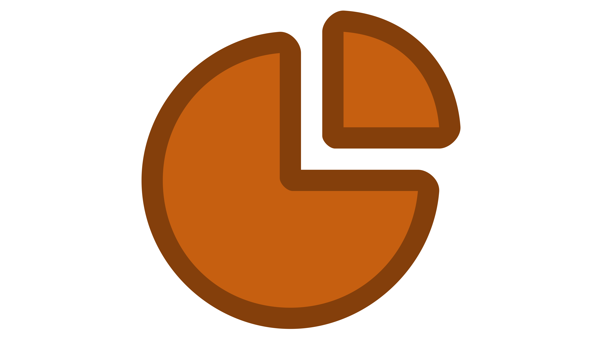

Wet Lab Engineering
Object A: System Configuration
Iteration path: A1 → A2 → A3
The working RPA–Cas12a cascade was followed by measured condition selection and system validation.
Node A1: Initial RPA–Cas12a Detection System
Background. Although RPA provides rapid isothermal amplification and Cas12a provides sequence-specific fluorescence reporting, the compatibility between amplification and downstream cleavage introduces multiple coupled variables, including primer concentration, enzyme amount, reaction composition, and reporter conditions.

Design. We assembled an RPA amplification module, a Cas12a–crRNA recognition module, and a fluorescent ssDNA reporter module following the pathway: target nucleic acid → amplification → target recognition → fluorescence output.Build. We assembled the RPA amplification module, Cas12a–crRNA recognition module, and fluorescent reporter module into a single-tube reaction, with all components premixed except the template to minimize cross-contamination.
Test. We monitored fluorescence, compared target-positive and negative reactions, and examined signal intensity and background. The initial reaction generated target-dependent fluorescence, but changing reagent amounts changed the signal.
Learn & Outcome. The working cascade supplied reaction stages for the ordinary differential equation (ODE) model in E1 and a baseline for concentration engineering in A2.
Edge A1 → A2
Trigger. A1 produced target-dependent fluorescence, with reagent-dependent signal strength.
Handoff. A2 tested reagent and condition gradients.
Edge A1 → E1
Trigger. The working cascade identified reverse transcription, amplification, Cas12a recognition, and cleavage stages.
Handoff. E1 represented their time-dependent concentrations with ODEs.
Node A2: Reaction Conditions Selected by Fluorescence
Background. B3 selected respiratory syncytial virus (RSV) Candidate 2; its reaction conditions then required testing for performance evaluation.
Design. Guided by E3’s numerical search, we tested an enzyme-mixture gradient of 0.1×, 0.5×, 1.0×, 1.6×, and 2.0× and final primer concentrations of 0.3, 0.4, 0.5, 0.6, 0.8, and 1.0 µM. We then compared temperature (37–42 °C), Mg²⁺ (5–25 mM), reporter (500–2000 nM), and gRNA:Cas12a ratios (3:1 to 1:3), changing one variable at a time and reading positive/negative fluorescence separation.
Build. For the RSV N-gene plasmid mimic, we held the remaining reaction components constant in each gradient and recorded fluorescence kinetics. The ODE narrowed a search region; measured fluorescence, rather than the numerical optimum alone, determined the conditions taken forward.
Test. The 1.0× and 2.0× enzyme-mixture groups gave similar fluorescence, so 1.0× was chosen with reagent cost in mind; 0.4 µM primers gave the strongest measured response in the tested primer gradient. The source wet-lab engineering record reports 41 °C and 20 mM Mg²⁺ for its gradient comparison. The subsequent Candidate 2 performance evaluation used a separately documented formulation: 0.4 µM of each primer, 20 nM Cas12a–crRNA complex, 2000 nM reporter, 25 mM Mg²⁺, and 40 °C. These formulations describe different experimental stages.
Learn & Outcome. E3 predicted 0.71 µM primer for its 10-minute objective, while the measured primer gradient favored 0.4 µM. We carried the documented Candidate 2 performance formulation into A3; there is no documented recalibration of the ODE against A2’s measured fluorescence data; the ODE optimum remained a search hypothesis.
Edge A2 → A3
Trigger. The Candidate 2 performance formulation used 0.4 µM of each primer, 2000 nM reporter, and 25 mM Mg²⁺ at 40 °C.
Handoff. A3 evaluated sensitivity and specificity under those conditions.
Node A3: Validation and Transfer of the Detection System
Background. After parameter engineering in A2, it was necessary to determine whether the final system not only produced a stronger signal but also reliably distinguished positive from negative samples and maintained robust performance under low-copy-number conditions, complex sample matrices, and different operators. Therefore, using the RSV N gene plasmid mimic as an example, we systematically evaluated the optimized RSV N gene plasmid-mimic detection system and transferred the same development framework to other respiratory pathogens.
Design. Performance evaluation of the combined RPA/CRISPR system included sensitivity, specificity, repeatability, matrix-interference resistance, and parallel validation against the standard qPCR method. Sensitivity was evaluated using serially diluted plasmid mimics; specificity was assessed using non-target pathogen plasmid mimics as negative controls; repeatability was evaluated through multiple independent experiments performed by different operators on different dates and at different time points; matrix-interference resistance was assessed using a saliva and lysis-buffer system to simulate the environment of actual throat-swab samples; finally, clinically derived nucleic-acid samples handled under appropriate biosafety conditions were compared with standard qPCR results.
Build. First, a complete performance evaluation was conducted for the RSV N gene plasmid mimic in the system. The same Design–Build–Test–Learn (DBTL) development logic was then transferred to the human metapneumovirus B (hMPV-B) N, Streptococcus pneumoniae (SPN) lytA, Bordetella pertussis (BP) IS1663, and Haemophilus influenzae (HI) ompP6 targets to establish corresponding RPA-CRISPR/Cas12a detection systems, whose performance was evaluated using the same framework.
Test. The RSV plasmid-mimic detection limit was 1.307 × 10² copies/µL; only the target plasmid produced clear signal in the specificity comparison. Six runs by two operators yielded an approximately 5.17% endpoint coefficient of variation (CV) at 25 minutes. The saliva and lysis-buffer groups were minimally affected, and ten clinical nucleic-acid samples (five cases and five controls) matched qPCR classification. The hMPV-B, SPN, BP, and HI mimic limits were 1.43 × 10¹, 1.0 × 10², 1.0 × 10¹, and 1.0 × 10³ copies/µL, respectively; their endpoint CVs were approximately 6.83%, 7.44%, 13.07%, and 20.76%.
Learn & Outcome. Transfer across targets retained positive/negative discrimination but did not make all reagent systems equivalent: the HI repeatability result calls for another target-specific engineering round. These laboratory results define measured performance boundaries for the portable readout; they do not by themselves validate every field workflow.
Object B: Primer and crRNA Selection
Iteration path: B1 → B2 → B3
RSV sequence design was narrowed to four combinations, then resolved by fluorescence.
Node B1: RSV Primer and crRNA Candidate Preparation
Background. The detection performance of RPA-CRISPR/Cas12a depends strongly on how well the primers and crRNA match the target region. To proceed to subsequent model screening and wet-lab validation, comparable candidate primer-crRNA combinations first need to be prepared around the RSV N gene.
Design. We generated complete primer–crRNA combinations for the RSV target using the F3 candidate-generation procedure.
Build. Forward primer, reverse primer, spacer, and amplicon sequences were prepared for scoring by D4.
Test. The output of B1 is a standardized set of candidate sequences rather than a final experimental conclusion. In the next stage, all candidate combinations are prioritized by an AI model, after which a limited number are selected for wet-lab experiments.
Learn & Outcome. As the number of candidate combinations increased, one-by-one wet-lab screening would have consumed more time and reagents. We therefore treated each forward primer, reverse primer, and crRNA as one comparable design and passed the set to D4 for ranking before B2 chose the wet-lab subset.
Edge B1 → D4
Trigger. B1 established comparable RSV primer–crRNA combinations, but conventional design alone could not determine which combinations should receive priority in the complete RPA–Cas12a system.
Handoff. D4 scored each complete combination with its amplicon context, so B2 could select three leading designs and a lower-ranked comparator for matched fluorescence tests.
Node B2: Rank Based Selection of RSV Combinations
Background. To reduce low-value wet-lab experiments, we used DNABERT-6 to comprehensively evaluate and rank candidate RSV-N primer-crRNA combinations, using sequence-level predictions to prioritize wet-lab testing.
Design. Using the RSV N gene target as an example, the model scored the candidate combinations and output 10 candidate sequence sets. To evaluate the model’s discriminative ability, wet-lab testing did not select only the top-ranked combination; instead, the top three—Candidate 1, Candidate 2, and Candidate 3—were selected together with the tenth-ranked Candidate 10 as a low-ranking control.
Build. The model output was converted into a defined wet-lab validation set: the Top 3 were used to test whether the model could enrich high-performing combinations, while Candidate 10 was used to test whether the model could identify a relatively low-performing combination.
Test. The direct outputs of this node are candidate priorities and the validation set. Model predictions themselves are not treated as the final answer; all candidates must still undergo actual fluorescence-kinetics validation under identical reaction conditions.
Learn & Outcome. The primary role of ranking was to reduce the search space rather than replace experiments. B3 measured the Top 3 and Candidate 10 under the same comparison conditions before Candidate 2 was carried into reaction engineering.
Edge B2 → B3
Trigger. Model ranks 1, 2, 3, and 10 defined the experimental comparison.
Handoff. B3 measured the four combinations under matched reaction conditions.
Node B3: Fluorescence Validation of RSV Combinations
Background. B2 narrowed the candidate range to four representative combinations. The goal of B3 is to use actual fluorescence kinetics to determine the primer-crRNA combination ultimately used for subsequent system engineering and to assess the consistency between AI ranking and wet-lab performance.
Design. Candidate 1, Candidate 2, Candidate 3, and Candidate 10 were tested separately. During the experiments, only the primer-crRNA combination was changed; all other reaction components and conditions were kept constant, with both positive templates and negative controls included. Evaluation metrics included the rate of fluorescence increase, endpoint fluorescence intensity, and the degree of separation between positive and negative signals.
Build. Each 15 µL comparison used 0.64 µM of each primer, 0.1 µM reporter, 20 mM Mg²⁺, and a 40 °C reaction.
Test. Experiments showed that all three top-ranked combinations produced clear fluorescence in positive samples while negative controls maintained low background. Among them, Candidate 2 showed the strongest endpoint fluorescence and overall signal increase. In contrast, Candidate 10 exhibited a later fluorescence rise, limited signal enhancement, and markedly poorer separation between positive and negative samples. Therefore, Candidate 2 was selected as the RSV primer-crRNA combination for subsequent system engineering.
Table. Summary of RSV candidate comparison (data from manuscript 9.22, Figure 3A–D)
| Model rank | Fluorescence | Decision |
|---|---|---|
| 1 | Early onset | Compared |
| 2 | Early, relatively high at 30 min | Selected |
| 3 | Early onset | Compared |
| 10 | Delayed onset | Comparator |
Table. RSV Candidate 2 oligonucleotides (manuscript 9.22, Table 3)
| Component | Sequence (5′ to 3′) |
|---|---|
| Forward primer | ACCATATATTGAACAATCCAAAAGCATCAT |
| Reverse primer | ATTTTCTTTGAGTTGCTCTGCATATGCTTT |
| crRNA spacer | CTAACTTCTCAAGTGTGGTCCT |
Learn & Outcome. The top-ranked three collectively developed earlier fluorescence than Candidate 10, while the second-ranked Candidate 2 performed best among the tested designs. This indicates useful enrichment in this four-design experiment, not a measured accuracy rate across all RSV combinations. Candidate 2 passed to A2. The 0.1 µM reporter concentration used in this comparison reflected the initial screening formulation; reporter concentration was later optimized in C2. A further model update was proposed in the wet-lab draft but is not documented as completed.
Edge B3 → A2
Trigger. Candidate 2 showed an early response and relatively high signal over 30 minutes.
Handoff. A2 used its oligonucleotides for the performance-evaluation formulation.
Object C: Fluorescence Readout
Iteration path: C1 → C2 → C3
Reporter cleavage was converted into a measured signal and extended to multiple targets.
Node C1: Initial Fluorescent reporter Readout
Background. RPA amplification and Cas12a target recognition must ultimately be converted into a signal that can be read by the instrument. Therefore, a reporter system is needed that can reliably convert Cas12a activation events into real-time fluorescence changes.
Design. We used a dual-labeled ssDNA reporter carrying a fluorophore and a quencher at opposite ends. When the reporter is intact, fluorescence is quenched. After Cas12a–crRNA recognizes the target DNA, Cas12a trans-cleavage activity is activated and cleaves the ssDNA reporter, separating the fluorophore from the quencher and generating a fluorescence signal that can be monitored in real time.
Build. A trans-cleavage reaction was constructed using target DNA, the corresponding crRNA, recombinant LbCas12a, and the dual-labeled ssDNA reporter, together with a negative control lacking target DNA.
Test. Fluorescence intensity was continuously recorded over time for each reaction group. The complete reaction system produced clear target-dependent fluorescence output, while the negative control lacking target DNA maintained low background, demonstrating that the reporter can effectively reflect Cas12a activation.
Learn & Outcome. The reporter converted target recognition to real-time fluorescence, but output magnitude and negative background still depended on reporter concentration and its compatibility with the rest of the reaction. Its observed signal gave G1 a concrete optical input, while C2 tested reporter amount.
Edge C1 → C2
Trigger. C1 established fluorescence, but reporter amount had not been selected against the measured signal.
Handoff. C2 tested a concentration series to separate target-positive from negative reactions.
Edge C1 → G1
Trigger. C1 generated fluorescence in reaction tubes, which required reproducible excitation and image capture outside the bench reader.
Handoff. G1 assembled fixed illumination, filtering, and camera acquisition around the assay.
Node C2: reporter Concentration and Signal Separation
Background. To improve the readability of the detection signal, the fluorescence response of positive samples must be increased while maintaining a low negative background. reporter concentration is one of the key variables that directly affects Cas12a trans-cleavage signal output.
Design. Using the RSV N gene plasmid mimic as an example, five final reporter concentrations—500, 750, 1000, 1500, and 2000 nM—were tested. With all other conditions held constant, fluorescence curves were collected in real time and the signal increase and positive/negative separation at different concentrations were compared.
Build. Different reporter concentrations were individually incorporated into the same RPA-CRISPR/Cas12a cascade system and tested in parallel using the same target, RNP, and amplification conditions, minimizing the influence of other variables on the evaluation of reporter concentration.
Test. reporter-concentration engineering showed that 2000 nM produced the best fluorescence output. This condition provided sufficient cleavable substrate and generated a strong positive signal, so it was incorporated into the subsequent optimized system. Real-time fluorescence kinetics and endpoint fluorescence values were then retained as the primary readouts in sensitivity, specificity, repeatability, and matrix-interference experiments.
Learn & Outcome. The strongest output in the tested reporter series was at 2000 nM. reporter amount must still be matched to Cas12a/RNP, Mg²⁺, and amplification; the resulting fluorescence range was passed to the portable optical readout and the subsequent performance formulation.
Edge C2 → C3
Trigger. C2 found the strongest recorded signal at 2000 nM reporter within the tested range.
Handoff. C3 applied the reporter-based readout to the additional pathogen-specific reagent systems.
Edge C2 → G1
Trigger. C2 established the positive and negative fluorescence range that the portable optical system needed to distinguish.
Handoff. G1 acquired tube images under fixed illumination and extracted the signal for mobile display.
Node C3: Multiple Target Reagent Readout
Background. After engineering of the single-pathogen fluorescence system, the engineering objective shifted from “whether one target can be read out reliably” to “whether multiple pathogen-detection systems can be integrated into a practical device.” This step determines whether the preceding wet-lab work can truly move into a portable application scenario.
Design. The established pathogen-specific RPA-CRISPR/Cas12a reagent systems were integrated with the self-developed portable fluorescence-detection device. The instrument performed real-time fluorescence acquisition, kinetic-curve display, and endpoint signal output during the reaction, followed by validation of simultaneous multi-pathogen detection.
Build. The optimized detection-reagent systems were transferred to the portable platform so that the reaction system and the instrument’s fluorescence-detection module could operate together. The previously established detection systems for RSV, hMPV-B, SPN, BP, and HI target-gene plasmid mimics provided the reagent basis for multi-pathogen output.
Test. Instrument validation showed that the independently designed detection-reagent systems could operate on the self-developed portable device and successfully demonstrated simultaneous detection of multiple pathogens.
Learn & Outcome. The reagent systems were transferred from a single-pathogen reaction to portable multi-pathogen output. This established a need for more loading positions and traceable tube-to-result mapping in G2 and I4; it did not validate every position or the full rotating-device workflow.
Edge C3 → G2
Trigger. Five pathogen-specific reactions and controls exceeded a simple fixed-view batch layout.
Handoff. G2 provided fifteen tube positions for sequential imaging; whole-device performance on the rotating platform remains to be tested.
Dry Lab Engineering
Object D: Sequence Ranking
Iteration path: D1 → D2 → D3 → D4
The sequence task moved from isolated PAM sites to complete combination ranking and candidate-group testing.
Node D1: PAM Site Ranking by Cosine Similarity
Background. The first model evaluated bacterial PAM sites as short fragments for BP, Group A Streptococcus (GAS), SPN, and HI.
Design. We encoded 27-nucleotide TTTN-PAM windows with DNABERT-6. A lower maximum cosine similarity to a non-target comparison sequence meant a more distinct site within that pool.
Build. We scanned both strands and constructed target, near, and background windows. Shared windows were flagged for filtering.
Test. Nine-class test accuracy was 0.4005; 3,228 of 8,122 non-positive windows were called positive. Strict filtering retained BP, GAS, and HI sites but removed all SPN sites; 36 flagged SPN sites were considered separately.
Table. First-stage PAM-site outputs (DNABERT PAM Model v3)
| Target | Strict filter |
|---|---|
| BP | Candidates retained |
| GAS | Candidates retained |
| HI | Candidates retained |
| SPN | No unflagged candidate |
Learn & Outcome. A PAM-site score did not incorporate the primers required for RPA. D2 changed the scored unit to a complete primer–crRNA combination.
Edge D1 → D2
Trigger. The cosine score ranked PAM fragments without primer information.
Handoff. D2 scored full primer–crRNA combinations.
Node D2: Pre-final DNABERT Multilayer Perceptron (MLP) Combination Ranker
Background. The cosine score in D1 compared isolated sites. F2 supplied matched primer, crRNA, and template sequences.
Design. We used DNABERT-6 to encode the components and a multilayer perceptron (MLP) to score each complete combination.
Build. We trained on source-linked comparisons without the final version’s enumerated, target-specific candidate groups.
Test. On the audited held-out split, the pre-final model reached 0.5150 pairwise accuracy; an explicit-feature rule reached 0.6487.
Learn & Outcome. The comparison prompted D3 to inspect how candidates and target splits affected the ranking result.
Edge D2 → D3
Trigger. The pre-final model scored 0.5150 pairwise accuracy against 0.6487 for an explicit-feature rule.
Handoff. D3 inspected candidate construction and target splitting.
Node D3: Audit of Candidate Construction
Background. D2 did not outperform the explicit-feature rule on the held-out comparison.
Design. We compared sequence and feature inputs and checked whether construction rules made published designs easy to identify.
Build. We corrected crRNA-adjacent motif, primer orientation, and coupled primer-length rules. Related targets were kept together across data splits.
Test. Before correction, a feature-only probe found the published design in 0.9020 of constructed groups. After correction, Hits@1 (rank-1 retrieval rate) fell to 0 (0 out of 26 groups) against a group-adjusted random value of 0.0154.
Learn & Outcome. The drop from 0.9020 to 0 after rule correction indicates that the earlier high value reflected construction bias rather than genuine ranking ability: inconsistent primer and PAM rules had made published designs trivially easy for a feature-only probe to distinguish from generated alternatives. After correction, the task became harder and more representative of real candidate pools. F3 rebuilt the candidate groups with consistent sequence geometry. Generated alternatives remained unmeasured.
Edge D3 → F3
Trigger. The feature-only probe’s earlier Hits@1 depended on candidate construction.
Handoff. F3 generated alternatives by consistent primer and PAM rules.
Node D4: Groupwise Combination Ranker
Background. F3 supplied target-specific groups containing published designs and enumerated primer–crRNA alternatives.
Design. We encoded the amplicon, both primers, and the crRNA spacer separately with a frozen DNABERT-6 encoder and joined them with 19 numerical features in a ranking head.
Build. We trained the projections and ranker on comparisons within each candidate group.
Test. Published combinations ranked first in 24 of 26 fixed holdout groups (Hits@1 = 0.9231). Removing the reverse-primer length feature reduced this metric to 0.8077. Across 30 matched seeds, a frozen random encoder attained mean Hits@1 = 0.9167 versus 0.8744 for the pretrained encoder.
Table. Ranking and ablation (manuscript 9.22, Table 2)
| Evaluation | Hits@1 |
|---|---|
| Reference, 26 fixed holdout groups | 0.9231 |
| Without reverse-primer length feature | 0.8077 |
| Pretrained encoder, mean of 30 seeds | 0.8744 |
| Frozen random encoder, mean of 30 seeds | 0.9167 |
Learn & Outcome. The frozen pretrained reference model ranked combinations for the previously unseen RSV target in B2. Notably, the frozen random encoder slightly outperformed the pretrained encoder (0.9167 vs 0.8744 mean Hits@1), suggesting that the sequence patterns distinguishing published designs within a candidate group may be better captured by task-specific projection learning than by general DNA-language pretraining. This counter-intuitive result warrants further investigation across additional target sets.
Edge D4 → B2
Trigger. The frozen pretrained reference model ranked RSV combinations for an unseen target.
Handoff. B2 selected ranks 1, 2, 3, and 10 for fluorescence testing.
Object E: Reaction Dynamics
Iteration path: E1 → E2 → E3
The ODE formulation gained substrate consumption before the parameter search.
Node E1: Initial ODE Reaction Formulation
Background. A1 exposed a sequence of reverse transcription, amplification, Cas12a activation, and reporter cleavage steps.
Design. We represented primer binding, recombinase loading, strand invasion, extension, and reporter cleavage as ordinary differential equations (ODEs).
Build. The first version listed reaction equations, rate constants, and initial reagent concentrations.
Test. Its documented output consisted of the equations and parameter tables; a numerical time course is available for the later E2 version.
Learn & Outcome. The initial equations established the reaction stages; without a documented numerical time course for E1, the next modeled iteration added finite substrate pools before concentration search.
Edge E1 → E2
Trigger. The first ODE formulation did not explicitly consume finite nucleotide and reporter pools.
Handoff. E2 tracked these substrates in the reaction dynamics.
Node E2: ODE Dynamics with Substrate Consumption
Background. The initial equations did not explicitly track depletion of dNTP and reporter.
Design. We added consumption of finite substrates and an efficiency coefficient for unequal primer behavior in a well-mixed ODE system.
Build. We set starting concentrations of enzymes, nucleic acids, dNTP, ATP, and reporter and solved the equations with LSODA. Cleaved reporter X was the signal variable.
Test. The 30-minute simulation showed DNA accumulation before X rose; X approached a plateau later in the baseline run.

Learn & Outcome. E3 used predicted X at 10 minutes to compare reagent concentrations.
Edge E2 → E3
Trigger. The substrate-aware ODE yielded a time course for cleaved reporter X.
Handoff. E3 used predicted X at 10 minutes as its search objective.
Node E3: Search for Reaction Concentrations
Background. E2 produced a time-dependent reporter-cleavage prediction under specified conditions.
Design. We used differential evolution to maximize predicted X at 10 minutes over primer, Cas12a–crRNA, and reverse transcriptase concentrations.
Build. A broad numerical search was followed by a finer search around the selected region.
Test. The fine search returned 0.71 µM primer, 82 nM Cas12a–crRNA, and 40 µM reverse transcriptase, with predicted X(10 min) = 2.6 × 10⁻⁸ M.
Learn & Outcome. A2 tested the primer gradient with measured fluorescence and selected 0.4 µM. The ODE optimum was a search hypothesis, not an experimentally confirmed optimum.
Edge E3 → A2
Trigger. E3 predicted 0.71 µM primer from the ODE objective.
Handoff. A2 measured a concentration gradient and selected 0.4 µM primer by fluorescence.
Object F: Training Data and Candidate Groups
Iteration path: F1 → F2 → F3
Short windows were replaced with source-linked combinations and target-specific alternatives.
Node F1: Short Window Classification Data
Background. The first bacterial screening task required target, near, and background examples.
Design. We generated labeled 27-nucleotide windows and marked windows shared across categories.
Build. The initial table had 45 nonempty records; windowing generated 46,244 sequences and left 42,802 after removal of shared windows.
Test. The reported test split contained 13,987 windows, of which 325 began with the PAM motif.
Learn & Outcome. F2 recorded whole assays because a window label did not specify a primer pair, spacer, and target template.
Edge F1 → F2
Trigger. F1 labeled 27-nucleotide bacterial windows rather than whole assay designs.
Handoff. F2 linked primers, spacers, and target templates in literature records.
Node F2: Literature Linked Combination Records
Background. A combination ranker needed its primer pair, spacer, and target sequence to refer to one assay.
Design. We matched reported oligonucleotides to target templates and retained source study information and within-study comparisons.
Build. We checked sequence orientation, primer placement, and whether the spacer lay inside the amplicon.
Test. Records failing these sequence checks were excluded from combination scoring.
Learn & Outcome. The records supported D2; F3 later generated comparable alternatives on the same template.
Edge F2 → D2
Trigger. F2 supplied complete combination records and source-linked comparisons.
Handoff. D2 trained a combination-level ranking head.
Edge F2 → F3
Trigger. Literature designs often lacked measured alternatives on the same template.
Handoff. F3 enumerated candidate primer pairs and spacers per target.
Node F3: Enumerated Candidate Groups
Background. Published assays often reported one adopted combination without measured results for many alternatives.
Design. For each matched literature design, we used Primer3 to generate alternative RPA primers and enumerated spacers next to TTTV PAMs within the amplicon.
Build. Of 200 collected records, 142 matched target templates. Candidate generation yielded 112 groups with 13,552 total combinations: 112 published and 13,440 generated.
Test. We checked primer direction, PAM and spacer location, duplicates, and target homology; 26 target groups formed the test set.
Table. Groupwise candidate construction (Drylab 9.3)
| Stage | Count |
|---|---|
| Collected literature records | 200 |
| Matched designs | 142 |
| Groups with candidate generation | 112 |
| Total combinations | 13,552 |
Learn & Outcome. The groupwise label asks whether D4 retrieves the published choice. The generated alternatives have no measured activity.
Edge F3 → D4
Trigger. F3 provided 112 candidate groups and 13,552 combinations.
Handoff. D4 trained and tested within-target ranking.
Hardware Engineering
Object G: Optical Acquisition and Capacity
Iteration path: G1 → G2
The fixed optical platform was extended with a rotating reaction chamber for batch imaging.
Node G1: First Portable Optical Readout
Background. The reaction in C1 produced fluorescence that required fixed excitation, imaging, and tube localization outside a bench reader. The first instrument brought those functions into a compact housing with a defined camera-to-tube distance.
Design. We arranged the reaction tubes, a blue LED, optical filtering elements, and a USB macro camera in a fixed spatial relationship inside a light-blocking enclosure. Orange Pi 5 Max with RK3588 handled image processing, and Wi-Fi linked the run to the mobile interface.
Build. The PET enclosure was designed in SolidWorks and 3D printed. You Only Look Once version 8 nano (YOLOv8n) located tubes in acquired images, while OpenCV extracted information from the corresponding regions for display and recording.
Test. We compared camera-to-tube distances of 70, 60, 50, 40, and 30 mm and selected 50 mm as the first-generation mounting distance. Device records also show tube loading, image acquisition, and mobile display as a connected operation.
Learn & Outcome. The first instrument joined fixed illumination, tube localization, and mobile records in one enclosure. Its limited observation area prompted a second layout with more positions; camera-distance engineering alone did not establish multi-position uniformity.
Edge G1 → G2
Trigger. A fixed optical view limited the number of tube positions.
Handoff. G2 added a rotating fifteen-position chamber.
Edge G1 → I1
Trigger. G1 transferred instrument communication to the mobile app over Wi-Fi.
Handoff. I1 handled connection and run parameter entry.
Node G2: Rotating Chamber for Batch Imaging
Background. Kindergarten and nursing-home batch scenarios require positions for target reactions, controls, and repeats beyond a limited fixed viewing area. Expansion also creates a need to retain each image’s face and tube position.
Design. We designed a three-face rotating chamber with five tube positions on each face, for fifteen loading positions. A drive and position feedback switch faces in front of a fixed camera, which acquires them in sequence. Fifteen positions do not imply fifteen simultaneous optical channels or fifteen complete samples.
Build. The larger enclosure separates a front two-position lysis block from the main rotating chamber, with separate loading covers. The camera and image processing follow each face as it enters the viewing position.
Test. Images of different tube arrangements show that the expanded layout enters the fixed camera view and that individual tubes can be localized. The material does not quantify performance at every position or demonstrate repeatable rotational alignment, face-to-face illumination uniformity, or absence of neighboring-tube effects.
Table. Device generations (ByeGerm Engineering)
| Property | G1 | G2 |
|---|---|---|
| Reaction positions | Fixed view | Three faces × five positions |
| Lysis zone | Not separate | Two-position front unit |
| Image evidence | Camera distance test | Multi-position tube images |
Learn & Outcome. Three faces with five positions each extend loading capacity, but loading positions are not simultaneous optical channels or completed sample results. Repeated positioning, lighting, and face–tube–run association require separate full-device checks in I4.
Edge G2 → I4
Trigger. The rotating chamber added face and tube positions to the imaging sequence.
Handoff. I4 still requires full-device validation to ensure each displayed result matches the correct tube and run.
Object H: Temperature Control
Iteration path: H1 → H2
Feedback heating in the fixed platform led to separate lysis and reaction zones.
Node H1: First Generation Temperature Feedback
Background. The first optical platform needed a controlled temperature during fluorescence acquisition.
Design. We used ceramic heaters, an 18B20 sensor, and proportional-integral-derivative / pulse-width modulation (PID/PWM) feedback to regulate the reaction area.
Build. Two heater groups supplied 6 W total; a fan assisted heat removal.
Test. First-generation platform records give a control range of 25–95 °C and fluctuation of about ±0.7 °C. This demonstrates feedback temperature control in the tested configuration; the range is not the assay setpoint and does not establish uniform temperature at all positions of the second instrument.
Learn & Outcome. The controlled zone supported first-platform runs; H2 separated lysis from the main reaction chamber.
Edge H1 → H2
Trigger. The first platform controlled one fixed reaction area.
Handoff. H2 separated the lysis block from the main chamber for the second layout.
Node H2: Second Generation Thermal Zones
Background. G2 introduced a front lysis area and a larger main chamber in one enclosure.
Design. We separated the front two-position lysis block from the fifteen-position main reaction chamber, with distinct support and insulation structures and independent loading access. The aim was to accommodate preparation and amplification in one enclosure without assuming that adjacent heating zones were already thermally independent.
Build. The front lid leads to the two-position lysis block, while an upper lid leads to the main reaction chamber. Support and insulation separate the heated metal block from the larger chamber within the same enclosure.
Test. The hardware record documents two structurally separate zones. It does not measure thermal coupling during concurrent heating or temperature variation among the fifteen reaction positions.
Learn & Outcome. Structural separation addresses access and layout. We still need temperature records for each zone operating alone and both operating together, as well as comparisons among reaction positions and the preparation throughput of the two-position lysis area.
Object I: Instrument App and Data Display
Iteration path: I1 → I2 → I4; I3 planned
The app connects, displays runs, and records tube-linked results; interruption recovery is scheduled for testing.
Node I1: Connection and Run Setup
Background. Before starting a run, users need to connect to the instrument and set the run conditions. We provide connection, temperature, and time settings in the app to organize the workflow from connection to startup.
Design. The workflow proceeds from connection to parameter setup and then to starting the run. After confirming a successful connection, users set the temperature and duration according to the assay protocol. Interface defaults are used only for initialization.
Build. After joining the local Wi-Fi network, users enter the Server IP and Port in the app and select Connect to Server. Settings provides access to temperature and duration settings, while Temperature Setting is used to adjust the target temperature.
Test. Existing app records show mobile operation after connection to the instrument. In the next iteration, we will check connection messages, parameter settings, and startup feedback, and confirm the operating sequence for the start button.
Learn & Outcome. After connecting, users still need to check the run feedback to confirm that the assay has started. The link between submitting parameters and updating the run status requires further integration testing.
Edge I1 → I2
Trigger. After connecting and setting parameters, users need to confirm that the run has started.
Handoff. The workflow leads to the run and data sections, which display the current temperature, countdown, fluorescence data, and returned images.
Node I2: Run Status, Curves, and Images
Background. Once a run starts, users need to follow its progress and view the returned fluorescence data and images. The app needs clear places to access this information.
Design. We organize the interface by content: the run section shows temperature and the countdown, the data section shows changes in fluorescence, and the image section shows returned fluorescence images.
Build. Current Temp displays the current temperature, Heating countdown displays the countdown, and the Data/curve section shows the fluorescence data received. The app receives and displays fluorescence images for users to view.
Test. Existing app records show run information and images displayed on the phone. In the next iteration, we will check the update sequence across these sections and whether their displayed content matches the data returned for the current run.
Learn & Outcome. When the interface stops updating, users need to distinguish between data that have not yet arrived and a lost connection. The next iteration will focus on missing data, images that have not arrived, and app behavior after reconnection.
Edge I2 → I3
Trigger. After establishing information display during normal operation, the interface needs to be checked when the connection is lost or data have not arrived.
Handoff. Disconnection and reconnection tests will check updates in each section and guide changes to messages and recovery steps.
Edge I2 → I4
Trigger. The normal-run app returned fluorescence data and images for the selected run.
Handoff. I4 links these returned observations to Tube numbers, channels used, assay controls, and sample records.
Node I3: Interruption and Reconnection Checks (Planned)
Background. This node describes planned validation, not completed work. A run may involve a lost connection, temperature or countdown updates that stop, or images and results that have not arrived. The next iteration will examine app messages and recovery behavior in these situations.
Design. We plan to check connection status, run status, and data updates separately, comparing the displayed content before and after reconnection. For blank results and data that have not updated, we will check whether the interface distinguishes them from negative results.
Build. The app already provides a Reconnect option. The current user workflow calls for reconnecting after network access is restored, then checking run status and data updates. These steps will form the basis of the planned interruption tests.
Test. We plan to disconnect and restore the network during a run, recording updates to temperature, the countdown, curves, images, and results.
Learn & Outcome. The planned tests will determine which updates resume after reconnection; I4 already displays results under the tested normal-run conditions.
Node I4: Tube Linked Result Recording
Background. Users need to match the results displayed in the app to their samples and record the run information. The display on different phones must support the same checking procedure.
Design. We link result viewing to sample checking. Users match the Tube numbers to the loading record, read the results for the channels used, and record the sample identifiers, assay parameters, and results.
Build. The app provides image and result viewing and supports saving records. The user workflow calls for interpreting results alongside run status, fluorescence data, and assay controls. The functions and operating sequence of the image-viewing and interpretation buttons still require confirmation through integration testing.
Test. App operation and result display have been recorded on the tested phones running HarmonyOS, HyperOS, ColorOS, and OriginOS. The preliminary test examples showed consistent classifications. These tests cover the specific phones and app versions evaluated.
Learn & Outcome. Blank results, unused channels, and data that have not updated cannot be treated as negative results. Results must be read with reference to the channels used and the assay controls.
Human Practices Engineering
Object J: Audience Adapted Education
Iteration path: J1 (v1) → J2 → J1 (v2)
Questions from different audiences informed revisions to education materials. This audience feedback also identifies a proposed usability question for I4: whether non-specialists can match displayed Tube numbers, controls, and results to a sample. The app test remains proposed.
Node J1: Audience Adapted Education Design
Background. Fragmented health information makes a single presentation inadequate for caregivers, young learners, and people who face communication or participation barriers. We treated education as an iterative part of a respiratory-testing project so that each audience could receive information it could understand and use.
Design. We organized activities by audience. Health Guardians are caregivers and health decision makers close to vulnerable people; Biotech Explorers engage more deeply through experiments, discussion, and creative work; Diversity Partners may face sensory, communication, or participation barriers. This classification determined the audience, medium, and interaction pattern of each activity.
Build. We used leaflets, slides, scripts, and templates in hospital waiting areas and maternity settings, kindergartens, schools, university groups, public spaces, and inclusive activities. The materials formed an initial reusable education toolkit.
Test. Activities gathered audience-specific questions, surveys, votes, anonymous comments, and on-site observations. Feedback was grouped by audience and content need rather than evaluated solely by attendance.
Learn & Outcome. The audience framework generated specific activities, including the Health Guardians leaflet in J2. Its materials and feedback can be revised as new audiences participate; it is an ongoing education cycle rather than a completed assay or device validation.
Edge J1 → J2
Trigger. J1 identified parents in hospital settings as Health Guardians who needed concise and accessible information about respiratory health while caring for infants.
Handoff. J2 used a short pneumococcal leaflet and one-to-one communication, then gathered the parents’ questions to revise the leaflet and FAQ.
Edge J1 → I4
Trigger. J1 identified a need for plain-language explanations, while I4 displays technical tube identifiers and controls; their comprehensibility has not been tested with these audiences.
Handoff. A proposed usability study could evaluate whether non-specialists can correctly interpret tube-linked results and controls in I4.
Node J2: Activity Level Feedback and Revision
Background. J1’s Health Guardians group included parents in hospital waiting areas who needed brief, understandable information while caring for infants.
Design. We prepared a low-interruption illustrated leaflet and one-to-one explanation about pneumococcal risk, infant protection, and vaccination information.
Build. The leaflet was displayed in ward and outpatient areas. Team members spoke with parents who were available to talk and recorded questions they volunteered.
Test. Parents’ questions were grouped around disease risk, vaccination timing, and safety concerns; those questions, rather than attendance alone, informed the activity review.
Learn & Outcome. We used these themes to revise the leaflet and FAQ and considered an audio FAQ to broaden accessibility. The activity illustrates the smaller Design–Build–Test–Learn cycle within J1; its educational feedback does not constitute evidence that the assay or app was already redesigned.
Edge J2 → J1
Trigger. J2 grouped recurring questions about disease risk, vaccination timing, and safety, making the next edits to its educational materials specific.
Handoff. J1 incorporated the revised leaflet and FAQ into its reusable toolkit so that the next audience-specific activity could build on the prior feedback.
feedback.